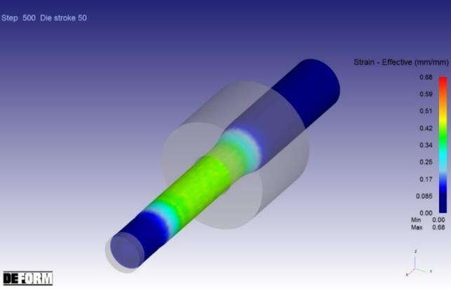
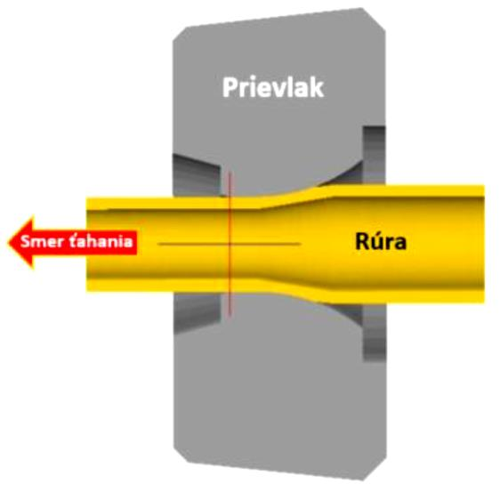
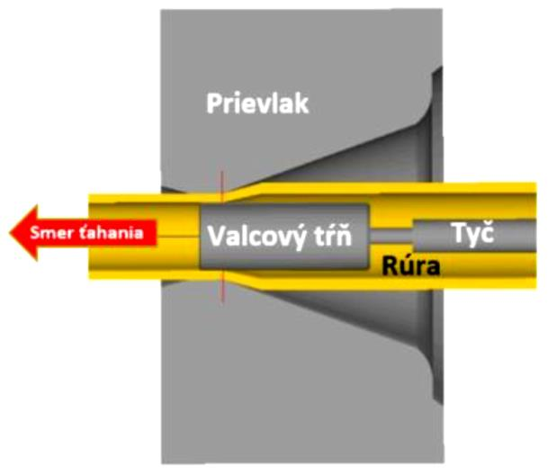
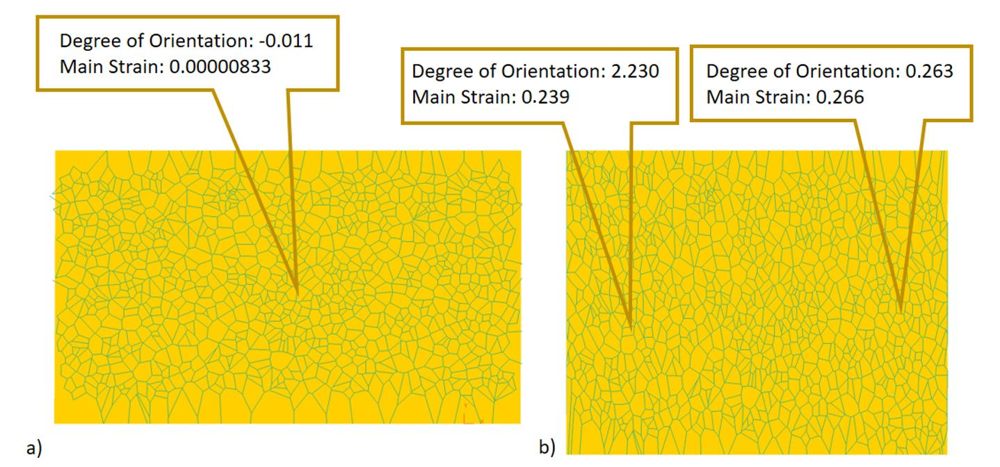

Cold Drawing of Seamless Tubes: Theory, Simulation and Validation
Lecture 4 · Modelling and Simulation of Processes II – Forming (MSPO2_6I)
Winter semester 2026/2027
Faculty of Materials Science and Technology · STU Bratislava

Tube sinking Ø16 → Ø12 mm, effective strain in DEFORM 3D (© Bílik, Necpal, Sobota 2023, Spektrum STU)
What tubes are drawn from, and in what sizes
| Group | Examples | Cold-drawn range | Use |
|---|---|---|---|
| Carbon and low-alloy steels | E235, E355, 11353, 11523, 12022, 15020 | precision tubes to EN 10305-1 | cylinders, mechanical engineering, pressure piping, boilers |
| Stainless steels | 1.4301, 1.4404, 1.4541, duplex 1.4462 | — | chemical and food industry |
| Copper and its alloys | Cu 99.9, brasses, Cu–Ni | Ø2–160 mm, wall 0.15–10 mm | coolers, food industry |
| Aluminium and its alloys | EN AW 6060, 6061, 6082, 2024, 7075 | Ø2–180 mm, wall 0.4–10 mm | transport, lightweight structures |
- In our studies: E235, E355 and SPT360 – ferritic-pearlitic steels with good cold formability
Then cold: the precision tube route

Production of precision tubes by cold drawing (© Bílik, Necpal, Sobota 2023 after the ŽP Handbook 2017)
Where today’s lecture fits
- Last time: flow stress and its models – now we use them
- Today: technology → analytics → FEM model setup → case studies → optimisation and validation
- Goal: that you can build, verify and critically assess a drawing model yourselves
Today’s agenda (152 min, with a break as needed)
| Time | Block | Content |
|---|---|---|
| 0:00 – 0:14 | Introduction | Motivation, materials, tube production chain |
| 0:14 – 0:40 | I · Drawing fundamentals | Drawing methods, die and plug, strain, parameters |
| 0:40 – 1:00 | II · Analytical methods | Ideal work, slab method, optimum angle, drawing limit |
| 1:00 – 1:32 | III · Numerical simulation | Implicit / explicit, Lagrange / ALE, model setup |
| 1:32 – 2:08 | IV · Case studies | Our own papers: friction, angle, wall thickness, DOE, ribbed tubes |
| 2:08 – 2:20 | V · Optimisation and validation | Calibration vs validation, recommendations, workflow |
| 2:20 – 2:32 | Summary and questions | Key takeaways, review questions |
Part I — Fundamentals of the drawing process
Wire, bar and tube · die and plug · strain · process parameters
Wire, bar and tube – what they share and how they differ
| Product | Input stock | Typical machine | Note |
|---|---|---|---|
| Wire | rolled wire rod in coils | multi-pass drawing machine with capstans | many passes in series, high speeds, small reduction per pass |
| Bar | bars or coils | draw bench | fewer passes, larger diameters |
| Tube | hollow shell | chain or hydraulic draw bench | control of wall thickness and inner diameter, plug |
- The physics is the same: the tensile stress at the exit must stay below the yield stress of the drawn material
Die geometry
- Entry cone – guides the lubricant into the die
- Reduction cone with angle 2α – this is where deformation happens
- Bearing (land) (cylinder, e.g. 4 mm) – sets the final diameter, compensates springback
- Exit cone – protects the product at the exit
- Die material: cemented carbide (e.g. G10–G60), tool steel

Ø25 mm die for a Ø28 × 4 mm tube (© Bílik, Necpal, Sobota 2023)
Four methods of tube drawing

a) tube sinking (no plug)

b) fixed (cylindrical) plug on a rod

c) floating plug

d) mandrel drawing (moving bar)
Comparison of drawing methods
| Method | Inner tool | Effect on the tube | Advantages | Limitations |
|---|---|---|---|---|
| Sinking | none | reduces D, the wall slightly thickens | simplest | inner surface and d not controlled |
| Fixed plug | plug on a rod | sets both D and d, reduces the wall | accuracy, inner surface | tube length limited by the rod, higher force, R ≈ up to 30 % |
| Floating plug | free plug in equilibrium | reduces D and the wall | long tubes from coil, higher speeds, R up to ≈ 45 % | sensitive to geometry and lubrication |
| Mandrel bar | bar moves with the tube | reduces D and the wall | thin walls (< 1 mm), friction on the bar helps | the bar must be extracted – reeling of the tube |
Direction of friction: on a fixed plug friction holds back the tube (increases the force); on a moving bar it pulls it forward (reduces the force).
Pointing – no point, no drawing
- The point must pass through the die and be gripped by the draw bench
- Hot: rotary swaging (e.g. 850–900 °C, Ø11 for a Ø12 die)
- Cold: pressing – suitable for thin walls
- In the simulation: the point and the undrawn end are not evaluated – only the steady middle part of the tube

Cold pointing by pressing

Tube point
Key process parameters
| Parameter | Influence |
|---|---|
| Die angle α | small α: long contact, much friction · large α: redundant deformation, pressure on the tool → optimum |
| Reduction | sets the force and hardening; limited by the strength of the drawn material |
| Friction and lubrication | force, wear, surface, heat; Coulomb μ or friction factor m |
| Drawing speed | lubricant film, heating; at slow tube drawing almost no effect on the force |
| Bearing length | diameter accuracy; too long increases friction |
| Plug geometry | angle and cylindrical length set d and wall thickness |
| Material | hardening curve, rate sensitivity, eccentricity of the input tube |
What affects the accuracy of a drawn tube
- Input tube: eccentricity, inner polygon → non-uniform strain
- Temperature: deformation and friction heat – thermal camera at the exit 130–180 °C
- Tools: dimensions, manufacturing accuracy, wear
- Deformation behind the die if σ₁ exceeds the yield stress of the hardened tube
- In sinking, the final D is slightly smaller than the die diameter

Measuring tube dimensions on a ZEISS CMM (© Bílik, Necpal, Sobota 2023)
Cold work hardening: one draw, a big change
| Draw (E235, wall 1 mm) | R [%] | Rp0.2 [MPa] | Rm [MPa] | A [%] |
|---|---|---|---|---|
| Ø14 → Ø12 | ≈ 13.5 | 285 → 415 | 412 → 498 | 25 → 10 |
| Ø16 → Ø12 | ≈ 24 | 295 → 439 | 408 → 531 | 28 → 10 |
| Ø18 → Ø12 | ≈ 32.5 | 285 → 469 | 399 → 568 | 30 → 8 |
- Strength rises, elongation drops to a third → after a few draws annealing is needed
- For the simulation: the hardening curve decides both the force and the drawing limit
What the model must capture
- Drawing force and stress – sizing the draw bench, risk of breakage
- Dimensions: D, d, wall thickness, roundness
- Strain and hardening in the wall
- Residual stresses from non-uniform deformation
- Loads and wear of the die and plug
Part II — Analytical methods of drawing
Ideal work · slab method · redundant work · drawing limit · optimum angle
Why analytics first – and notation
- Quick estimate of force and power – sizing the draw bench
- Trends: effect of reduction, friction and angle
- Reference for checking the simulation
- Rule: do not trust a simulation until you have compared it with at least a simple estimate
| Symbol | Meaning |
|---|---|
| \(A_0, A_1\) (\(S_0, S_r\)) | cross-section before / after the draw |
| \(r=(A_0-A_1)/A_0\) | area reduction |
| \(\varepsilon=\ln(A_0/A_1)\) | true (logarithmic) strain |
| \(\sigma_f\) | mean flow stress |
| \(\alpha,\ \mu\) | die half-angle, friction coefficient |
| \(\sigma_d,\ F=\sigma_d A_1,\ P=F v\) | drawing stress, force, power |
Maximum reduction per pass
- Condition: \(\sigma_d < \sigma_f\) of the material behind the die
- Ideal, no hardening: \(\varepsilon_{max}=1\Rightarrow r_{max}=1-1/e\approx 63\,\%\)
- With hardening \(\sigma=K\varepsilon^n\): \(r_{max}=1-e^{-(1+n)}\)
- With friction, redundant work and a safety margin: wire 20–30 % per pass
- Tubes: fixed plug ≈ up to 30 %, floating plug ≈ up to 45 %, overall ≈ 50 %
| n | rmax (ideal) |
|---|---|
| 0 | 63 % |
| 0.2 | 70 % |
| 0.44 | 76 % |
Hardening helps: the drawn part is stronger than the deforming zone.
Worked example: bar Ø10 mm, r = 20 %
- A₀ = 78.54 mm², A₁ = 62.83 mm², D₁ = 8.94 mm
- ε = 0.223, σf = 500 MPa, α = 6°, μ = 0.1, v = 1 m/s
- F = 253 · 62.83 ≈ 15.9 kN, P = F·v ≈ 15.9 kW
- Check: 253 MPa < 500 MPa → the bar is drawn, it does not break (margin ≈ 2×)
| Model | σd [MPa] |
|---|---|
| Ideal work | 112 |
| Slab method (B = 0.951) | 196 |
| Siebel, α = 3° | 342 |
| Siebel, α = 6° | 253 |
| Siebel, α = 10° | 233 |
| Siebel, α = 15° | 240 |
Analytics versus measurement for a tube
a) Tube on a plug Ø30 × 3 → Ø27 × 2.5 mm
- A₀ = 254.5 mm², A₁ = 192.4 mm², r = 24.4 %, ε = 0.28
- σf = 300 MPa → ideal F ≈ 16 kN
- Simplified, ηF = 0.5 → F ≈ 32 kN
b) Sinking Ø16 × 2 → Ø12 mm (E235)
- S₀ = 89.6 mm², S = 65.4 mm², φ = 0.315
- σpm = (295 + 439)/2 ≈ 367 MPa
- Ideal 7.6 kN · ηF = 0.5–0.6 → 12.6–15.1 kN · Siebel (α ≈ 12°, μ = 0.08) → 13.8 kN
- Measured 21.5–22 kN · FEM 20.5 kN
Simple analytics underestimates the sinking force by ≈ 35 % – it misses wall bending at the entry, wall thickening and real lubrication. Good for the order of magnitude, not for design.
What analytics can – and cannot – do
| Analytics can give | Analytics cannot give |
|---|---|
| mean drawing force and stress | local distribution of strain, stress, temperature |
| trends: reduction, friction, angle | residual stresses |
| drawing limit, optimum angle | tool pressure and wear in detail |
| fast, without software | eccentricity, ovality, wall thickness distribution |
| defects (cracks, surface defects) |
Analytics = first design and plausibility check. FEM = when local fields, dimensions, tools and defects matter.
Part III — Numerical simulation and setting up a drawing model
Implicit / explicit · Lagrange / ALE · material · friction · mesh · boundary conditions
A model = four independent choices
| Choice | Options | What it answers |
|---|---|---|
| Time integration | implicit / explicit | How is the equation of motion solved in a step? |
| Mesh description | Lagrange / ALE / Euler | Does the mesh move with the material? |
| Material formulation | rigid-plastic / elastic-plastic | Do we also compute elastic strains? |
| Model dimension | 2D axisymmetric / 3D | Is the problem symmetric? |
They are often confused – e.g. “explicit” does not mean “3D” and “Lagrange” does not mean “implicit”.
Typical combinations in software
| Software / study | Typical combination |
|---|---|
| DEFORM 2D / 3D | implicit, updated Lagrangian with automatic remeshing; rigid-plastic (flow) or elastic-plastic material; ALE solver for steady-state processes |
| Abaqus/Standard | implicit, Lagrange, elastic-plastic |
| Abaqus/Explicit | explicit, Lagrange or adaptive ALE mesh, elastic-plastic |
| LS-DYNA | explicit and implicit; floating plug solved implicitly, 2D axisymmetric |
| MSC.Superform (Neves et al.) | elastic-plastic FEM of fixed-plug drawing, compared with an upper-bound solution |
Basic tube drawing model – inputs
| Item | What to enter | Practical note |
|---|---|---|
| Geometry | tube D₀, s₀, L; die α, bearing; plug | tube long enough for a steady state |
| Tools | rigid or elastic | rigid is enough for force and strain |
| Material | curve σ(ε, ε̇, T), possibly E, ν | from a tensile test, e.g. σ = c·εⁿ·ε̇ᵐ + y |
| Friction | μ or m, separately for die and plug | the most sensitive input – calibrate by measuring force |
| Boundary conditions | speed / displacement; plug holding | 9 m/min in our studies |
| Mesh | element size, elements through the wall | 4–8 elements through the wall in 2D |
| Heat | deformation and friction heat | often neglected in slow drawing |
| Several draws | state after draw 1 = start of draw 2 | without annealing the hardening is carried over too |
Friction – the most sensitive input
- Coulomb – at low pressure; shear model – at high pressure (bulk forming, DEFORM)
- Literature gives μ ≈ 0.02–0.03 for drawing – unreliable for a specific lubricant and tool
- Our values: m = 0.08 (general), m ≈ 0.053–0.054 (carbide die, inverse from measurement)
- LS-DYNA, floating plug: die μ 0.05 → 0.10 raises the force by ≈ 20 %
Implicit analysis
- In every step a system of equations is solved (Newton–Raphson)
- Unconditionally stable – large step, limited only by convergence
- Solves equilibrium (quasi-statically)
Setup for drawing:
- quasi-static step, displacement-controlled
- prevent rigid-body motion (hold the plug)
- die–tube and plug–tube contact with friction, small steps at first contact
- step: a node must not move more than a fraction of the smallest element
| Advantages | Disadvantages |
|---|---|
| efficient for slow processes | expensive steps, lots of memory |
| smooth results | convergence when contact changes |
| unloading and residual stresses directly | a floating plug must be stabilised |
| large steps | mapping errors when remeshing |
LS-DYNA, floating plug: the static solution gave a similar force to the dynamic one in 22 min instead of 104 min.
Explicit analysis
- The new state is computed directly from the current one – a cheap step
- Conditionally stable: \(\Delta t \le L_{min}/c\), \(c=\sqrt{E/\rho}\)
- Always dynamic equilibrium – the loading rate matters
50 mm at 9 m/min = 0.33 s → ≈ 7 million steps
- Hence: process speed-up and / or mass scaling
- Check: kinetic / internal energy (ALLKE/ALLIE) < 5–10 %
| Advantages | Disadvantages |
|---|---|
| no convergence problems | very small step |
| cheap steps, little memory | speed-up can spoil quasi-statics |
| free motion of a floating plug | noisy results – filter them |
| simple damage / failure | sensitive to small elements |
Implicit or explicit?
| Implicit | Explicit | |
|---|---|---|
| Step | large, expensive | small, cheap |
| Stability | unconditional | conditional (critical Δt) |
| Contact | convergence may fail | robust |
| Force | smooth | oscillating – average it |
| Residual stresses | directly | by transfer to an implicit solver |
| Typical for drawing | DEFORM, Abaqus/Standard | Abaqus/Explicit, LS-DYNA |
Hybrid in practice: forming explicit → transfer the result → springback and residual stresses implicit.
Lagrangian description – the mesh moves with the material
- Nodes are attached to material points; DEFORM: updated Lagrangian, the unknowns are velocities
- Naturally tracks free surfaces, contact and the history of every point
- 2D: structured mesh, 4–8 elements through the wall; at moderate strain without remeshing
- Phases: start-up → steady state → run-out; read the force in the steady part
- Several draws: final mesh and state of draw 1 → start of draw 2

2D axisymmetric Lagrangian model, draws 1 and 2, longitudinal strain (© Necpal, Martinkovič 2019, CC BY 3.0)
ALE and the Eulerian description
- ALE: the mesh can move independently of the material, keeps its topology → less distortion
- Euler: the mesh is fixed in space, the material flows through it (Abaqus CEL)
- Steady state: the geometry in the die does not change → model only a short section with inflow and outflow
- We did not find a published ALE setup for tube drawing in the sources – most studies are Lagrangian
| Advantages | Disadvantages |
|---|---|
| less mesh distortion | more demanding boundary conditions |
| small domain, short computation | steady state only – no start-up or run-out |
| smooth fields | history is transported with an error |
| not available in every solver |
Rigid-plastic versus elastic-plastic formulation
| Rigid-plastic (flow) | Elastic-plastic | |
|---|---|---|
| Idea | elastic strains neglected, velocities unknown, incompressibility by penalty | both elastic and plastic strains |
| Basis | Kobayashi, Oh, Altan; the classic DEFORM solver | Abaqus, MSC.Superform, option in DEFORM |
| Suitable for | force, strain, wall thickness | residual stresses, springback |
| Not suitable for | residual stresses, elastic effects | – (higher cost, poorer convergence) |
Tools: rigid is enough for force and strain; an elastic die (possibly with a shrink-fitted ring) for tool stress and wear.
2D axisymmetric or 3D?
| 2D axisymmetric | 3D | |
|---|---|---|
| Valid when | tube, die, plug are coaxial | eccentricity, ovality, profile |
| Results | force, strain, wall | + eccentricity, ovality, full picture of residual stresses |
| Time | low – parametric studies | high |
| Step (our study) | 1·10⁻⁴ s | 1·10⁻⁵ s |
- Ribbed plug: quarter 3D model (mirror symmetry), refined mesh in the rib

Mesh refinement in the rib: 0.7 mm → 0.07 mm (© Necpal, Martinkovič 2019, DAAAM)
How we set up the models in DEFORM
| Item | 2D (02, 03, 04, 09) | 3D (05, 07, 10; book) |
|---|---|---|
| Description | Lagrange, axisymmetric | Lagrange, quarter model / whole tube |
| Mesh | 4–8 quadrilaterals through the wall, no remeshing | tetrahedra, 160,000–592,000 elements, remeshing every 50 steps |
| Tools | rigid die, rigid plug | |
| Speed | 9 m/min; 60 mm/min (DOE) | 9 m/min; 1–800 mm/s (parametric studies) |
| Friction | shear, m = 0.08 or 0.054 (from measurement) | |
| Boundary condition | the tube point is pulled | tube 10: the tools move, tube end clamped – better convergence |
| Evaluation | only the steady middle part of the tube; force = mean in the steady state | |
What to expect from which simulation
| Result | Impl. Lagrange rigid-plastic | Impl. Lagrange elastic-plastic | Explicit | ALE steady state |
|---|---|---|---|---|
| Drawing force | yes | yes | yes, filter it | yes |
| Strain, wall thickness | yes | yes | yes | yes (smooth) |
| Residual stresses | no | yes | by transfer | depends on solver |
| Pressure / stress in the tool | pressure only | yes, elastic die | pressure only | yes |
| Start-up and run-out | yes | yes | yes | no |
| Floating plug position | difficult | difficult | naturally | unsuitable |
| Defects (damage) | with a criterion | yes | yes | limited |
Example from the literature: a larger angle 2α (6° → 38°) increased plug wear by more than 80 %, die wear by only ≈ 5 % (Wasilewski et al. 2025).
Typical numerical problems and remedies
| Problem | Cause | Remedy |
|---|---|---|
| Mesh distortion at the entry / near the plug | large local strain | finer mesh, remeshing, ALE |
| Implicit run does not converge | contact changes, rigid-body motion | smaller step, better initial contact, constraints |
| The plug “passes” through the die | high plug friction, unstable position | reduce plug friction, self-locating shape |
| Explicit run takes too long | small elements, slow process | speed-up, mass scaling + energy check |
| Loss of tube volume | remeshing, coarse mesh | finer mesh, volume check |
| Force does not match the measurement | wrong friction or hardening curve | calibrate friction, verify the curve |
| Result depends on the mesh | too few elements through the wall | mesh sensitivity study |
How to choose a model
| Question | Choice |
|---|---|
| Force and strain, parametric study (α, R, μ) | 2D axisymmetric, implicit, Lagrange, rigid tools |
| Residual stresses | elastic-plastic, implicit (or explicit → implicit), 3D for eccentricity |
| Tool stress and wear | elastic die, wear model |
| Floating plug, start-up | explicit or implicit with plug stabilisation |
| Long steady process, fine mesh in the die | ALE / steady-state solver |
| Profiled plug, ribs | 3D, symmetry, local mesh refinement |
Always: compare with an analytical estimate and with the measured force – exactly what the case studies do.
Part IV — Case studies from our own research
Ten publications 2017–2023 · DEFORM 2D / 3D · experiments at ŽP Podbrezová and at MTF
Map of the studies: one line of research
| Topic | Method | Model | Validation | Source |
|---|---|---|---|---|
| Two draws E235 / E355, strain | fixed plug | DEFORM 2D | stereology, HV, Rm | Necpal 2017, 2019 |
| Voronoi grains, FLOWNET | fixed plug | DEFORM 2D | analytical | Necpal 2021 |
| Friction coefficient by inverse analysis | sinking | DEFORM 2D | measured force | Necpal 2018 |
| Friction, angle, speed → force | sinking | DEFORM 3D | — | Kapustová 2019, book |
| Wall thickness, force, dimensions | sinking | DEFORM 3D | CMM, force | book 2023 |
| DOE + ANOVA of dimensions | sinking | DEFORM 2D | statistics | Necpal 2022 |
| Ribbed plug: groove angle, force, stresses | profiled plug | DEFORM 2D / 3D | 2D bounds | Necpal 2019, 2020 |
Two draws without annealing: E235 and E355
| Draw | Input | Output | R [%] | R wall [%] | R D [%] |
|---|---|---|---|---|---|
| 1 | Ø70 × 6.3 | Ø55 × 4.75 | 40.5 | 25 | 21 |
| 2 | Ø55 × 4.75 | Ø50 × 3.75 | 27.3 | 21 | 9 |
- Hot-rolled tube, ŽP Podbrezová, point Ø40 mm
- DEFORM 2D, Lagrange, 9 m/min, m = 0.08
- 8 elements through the wall (draw 2: 6), no remeshing
- Draw 2 starts from the state after draw 1 – strain and hardening are carried over
- Question: is the computed strain correct?
Voronoi tessellation as “virtual grains”
- Tube Ø28 × 4 → Ø25 × 3.5 mm (plug Ø18), α = 12°, bearing 4 mm
- Analytically: R = 21.6 %, ε = (S₀ − S)/S = 0.276
- MATLAB: Voronoi tessellation → FLOWNET pattern in DEFORM 2D
- FLOWNET deforms with the material and survives remeshing – like an etched grid
- Degree of orientation ω from the “virtual grains” → strain ≈ 0.24–0.27


Pattern in the tube wall and degree of orientation before / after drawing (© Necpal, Martinkovič, Kuruc 2021, CC BY 3.0)
How to measure friction: drawing on a tensile testing machine

Modified tensile testing machine (© Necpal, Martinkovič, Václav 2018)
- Tube Ø28 × 4 mm, SPT360 steel, sinking to Ø25 mm
- 4 cemented-carbide dies, α = 6°, 8°, 10°, 12°, bearing 2 mm, vegetable oil
- The force rises and settles – the mean of the steady part is taken

Measured forces: 6° 38.0 kN, 8° 40.3 kN, 10° 42.0 kN, 12° 43.9 kN (© Necpal et al. 2018)
Inverse analysis: the force is linear in friction

FEM, α = 8°: F(μ) for μ = 0.02–0.06 (© Necpal et al. 2018)
- F = 40,349 N → μ ≈ 0.053 (0.0526 in the paper)
- Later studies (05, 07, 10) use 0.05421
- Valid only for this die, lubricant and material – it is not a universal constant
- The paper text gives a range of 0.2–0.6, the chart shows 0.02–0.06 → the result lies inside the range
Friction × die angle → force (DEFORM 3D)

Fmax for f = 0.06–0.12 and α = 6–12° (© Kapustová, Sobota, Necpal 2019, Trans Tech)
- Ø28 × 4 → Ø25 × 4 mm, E235, 160,000 elements, 200 mm/s
- The force grows with friction at all angles
- 6°: 49 → 65 kN – the most sensitive to friction
- 10°: 46 → 53 kN – the lowest force
- Recommendation: α = 10°, friction 0.06–0.08
Drawing speed hardly changes the force
| f | 2α | 100 | 200 | 300 | 400 | 500 | 800 mm/s |
|---|---|---|---|---|---|---|---|
| 0.08 | 20° | 50.8 | 50.9 | 51.0 | 51.0 | 51.0 | 51.1 |
| 0.08 | 24° | 50.9 | 51.0 | 51.1 | 51.1 | 51.1 | 51.2 |
| 0.12 | 20° | 56.5 | 56.6 | 56.6 | 56.7 | 56.7 | 56.8 |
| 0.12 | 24° | 54.7 | 54.8 | 54.9 | 54.9 | 54.9 | 55.0 |
- Fmax [kN]: 8× the speed → +0.6 %; friction 0.08 → 0.12 → +7 to +11 %
- Caution: the model has no temperature and a small m – speed acts through heating and the lubricant film, which the model does not have
How to design an experiment in FEM
- Define the problem (screening, optimisation, validation)
- The response and how to measure it (postprocessor)
- Factors and levels
- Type of design (curvature, replicates, run order)
- Run it in the software (DOE module in DEFORM)
- Measurement system (postprocessor capabilities)
- Statistical software (Minitab, SPSS)
- Interpret in the context of the problem
| Run | A Ø | B s | C die Ø |
|---|---|---|---|
| 1 | 16 | 1 | 12 |
| 2 | 18 | 1 | 12 |
| 3 | 16 | 2 | 12 |
| 4 | 18 | 2 | 12 |
| 5–8 | the same with a Ø14 die | ||
Model: Lagrange 2D, α = 8°, bearing 4 mm, m = 0.08, 4 elements through the wall, 60 mm/min.
ANOVA results
| Final D | F | p |
|---|---|---|
| A tube Ø | 31.3 | 0.000 |
| B wall | 3.1 | 0.090 |
| C die Ø | 46.8 | 0.000 |
| A×C | 26.8 | 0.000 |
| B×C | 4.0 | 0.055 |
| Final wall | F | p |
|---|---|---|
| A tube Ø | 315 | 0.000 |
| B wall | 325 | 0.000 |
| C die Ø | 258 | 0.000 |
| A×C | 283 | 0.000 |
| A×B, B×C | 6.3 / 5.3 | 0.017 / 0.028 |
- Residuals: normal, no outliers; a slight trend in run order → more replicates
- Observation: D comes out smaller than the die (≈ 11.4–11.6 for Ø12), the wall thickens
Summary and questions
- DOE + FEM = cheap parameter screening, but a real experiment is still needed for validation
- “Replicates” in a deterministic simulation are not random – the scatter comes from numerics (mesh, steps)
- How many simulations does a 2³ design with five replicates have? 2³ = 8 combinations × 5 replicates = 40 simulations.
- Which factor affects the final D most? The die diameter C (F = 46.8), then the input tube diameter A and the A×C interaction.
- What does a significant A×C interaction mean? The effect of the tube diameter on the result depends on the die diameter – the effects cannot be added independently.
- Why does DOE in FEM not replace a real experiment? The model contains assumptions (friction, material, rigid tools); the statistics assess the model, not reality – validation is needed.
Press ↑ to return to the main lecture or → to continue.
Internally ribbed tubes: the plug groove angle
- Heat exchangers, evaporators – ribs increase the inner surface
- The last draw on a ribbed plug; quality = rib filling
- DEFORM 3D, tetrahedra, remeshing every 50 steps, m = 0.05421, R = 12.5 %
| δ [°] | 5 | 10 | 15 | −5 | −10 | −15 |
|---|---|---|---|---|---|---|
| gap [mm] | 0.22 | 0.21 | 0.21 | 0.18 | 0.17 | 0.15 |
- A negative groove angle fills the ribs better – best at −15°

Groove filling for δ = ±5°, ±10°, ±15° (© Necpal, Hodúlová, Martinkovič 2020, Trans Tech)
Stresses in the wall of an internally ribbed tube
- Force: die ≈ 45 kN, plug ≈ 1.5 kN in steady state, a peak at the start (profile filling) → size the plug rod
- Longitudinal stress: compression near the inner surface, tension near the outer
- Max normal stress near the outer surface
- Design rule: maximum compression inside (rib filling), tension outside below the strength (cracks)
- Computation ≈ 40 min; the tools move, the tube end is clamped

Effective stress in the section and stresses through the wall (© Necpal, Martinkovič 2019, DAAAM)
What the studies taught us
- Friction must be measured, not taken from the literature
- Force grows linearly with friction, and hardly at all with speed
- Die angle has a flat optimum that depends on friction
- Strain is set by the geometry, not by the steel
- Sinking thickens the wall by 2–5 % and D is smaller than the die
- 2D is enough for force and strain, 3D for profiles and stresses
- Plug geometry can be optimised virtually
- Every model needs independent verification
Part V — Optimisation and validation
Calibration versus validation · verification ladder · recommendations · optimisation workflow · uncertainties
Calibration is not validation
- Friction from the force at 8° → validate on the force at other angles, on dimensions, on strain
- If we calibrated friction at each angle separately, the model would always “fit” – and prove nothing
- Split the data: part for calibration, part for validation (as in machine learning)
Model versus reality – summary of our comparisons
| Quantity | Experiment / reference | FEM | Deviation | Source |
|---|---|---|---|---|
| φ₃ after draw 1 | 0.520 (stereology) | 0.537 | +3 % | Necpal 2019 |
| φ₃ after draw 2 | 0.839 (stereology) | 0.874 | +4 % | Necpal 2019 |
| Force Ø16 → Ø12 | 21.5–22.0 kN | 20.5 kN | −5 to −7 % | book 3.3.2 |
| Drawing stress | 328–330 MPa | 280–350 MPa | within range | book 3.3.2 |
| Δs in sinking | 0.04–0.14 mm | 0.04–0.10 mm | same trend | book 3.3.1 |
| Force, ribbed plug (3D) | 2D bounds 39.6–47.0 kN | 44.9 kN | inside | Necpal 2020 |
| Analytics Ø16 → Ø12 | 21.5–22.0 kN | 12.6–15.1 kN (analyt.) | ≈ −35 % | own estimate |
Integral quantities (force, mean strain) match within ±5 %; local ones (wall thickness) rather in trend – sensitive to the scatter of the input tube and to the mesh.
Which die angle is optimal? It depends on the conditions
| Source | Optimum | Conditions |
|---|---|---|
| Siebel (analytical) | α ≈ 10.5° | bar, μ = 0.1, r = 20 % |
| Necpal 2018 (FEM + measurement) | α ≈ 8° (chart: minimum at 10°, 6–10° flat) | carbide, μ ≈ 0.053, bearing 2 mm |
| Kapustová 2019 (FEM 3D) | α = 10° | f = 0.06–0.12, 200 mm/s |
| Book 3.3.3 (FEM 3D) | 2α = 24° (α = 12°) | f = 0.08–0.12 |
| Počta 1963 (practice) | 2α = 24–28° | industrial drawing of steel tubes |
- All lie in the band α ≈ 8–14° – that is a flat minimum, not a contradiction
- Tool life, dimensions (larger α → smaller D) and lubrication stability also matter
Process optimisation workflow by simulation
| Goal | Lever |
|---|---|
| lower force | α in the 8–12° band, better lubrication |
| accurate D | die Ø (+ correction for the drop in D), smaller α |
| wall thickness | input wall, plug, reduction |
| rib filling | negative plug groove angle, pressure inside |
| no breakage | reduction per pass, σ₁ below the yield stress |
Uncertainties and limitations – be critical
- Friction 0.0526 vs 0.05421 in follow-up papers – the same test, a different number
- Temperature neglected, although the tube leaves at 130–180 °C
- Rigid tools – no die springback and no die wear
- Input tube ideal – no eccentricity or polygon
- Typos in the papers: die 24 vs 25 mm, 10° vs 12°, “stainless” steel for E235
- Hand lubrication in the experiment → non-constant friction
- Mesh: 4 elements through the wall in the DOE – no sensitivity study
- A simulation is only as good as its inputs and its verification
Summary
- Fundamentals: four drawing methods; σ₁ must stay below the yield stress of the hardened tube
- Analytics: ideal < slab method < Siebel; flat angle optimum, drawing limit
- FEM: four independent choices; friction and the hardening curve matter most
- Studies: friction by inverse analysis, force independent of speed, the wall thickens, 2D bounds 3D, negative groove angle
- Validation: calibrate on one quantity, verify on others
Next time: preprocessing in DEFORM – mesh, boundary conditions and friction in practice
Review questions
- A Ø70 × 6.3 mm tube is drawn to Ø55 × 4.75 mm. Calculate the reduction R and the strain φ. S₀ = π·63.7·6.3 = 1260.9 mm², S = π·50.25·4.75 = 749.9 mm²; R = 40.5 %, φ = ln(1260.9/749.9) = 0.52.
- Why is there an optimum die angle? Friction work falls with the angle, redundant work rises; their sum with the ideal work has a flat minimum (≈ 8–14°).
- What is the condition for the drawing limit, and its ideal value without hardening? The drawing stress must be lower than the flow stress of the material behind the die; ideally r_max = 1 − 1/e ≈ 63 %.
- How does the wall thickness change in sinking and in fixed-plug drawing? In sinking the wall thickens slightly (≈ 2–5 %); on a fixed plug it thins, because the plug sets the inner diameter.
- Why does an explicit simulation of slow drawing need speed-up or mass scaling, and how do you check it is quasi-static? A stable step of ≈ 5·10⁻⁸ s would give millions of steps; the check is the ratio of kinetic to internal energy below 5–10 %.
- How is the friction coefficient found by inverse analysis? Measure the steady force, simulate several friction values, and from the linear dependence F(μ) find μ for the measured force (≈ 0.053).
- Why can a model not be validated with the same force that was used to calibrate friction? The agreement is forced by the calibration; validation needs an independent quantity – dimensions, strain, force under other conditions.
- When is a 2D axisymmetric model enough, and when is 3D needed? 2D for a coaxial, symmetric problem (force, strain, wall); 3D for eccentricity, ovality, profiled plugs and for stresses in ribs.
Sources and further reading
- Bílik, J.; Necpal, M.; Sobota, R.: Výroba bezšvových rúr. Teoreticko-technologické aspekty výroby. Spektrum STU, 2023 (in Slovak)
- Necpal, M.; Sobota, R.: Modelovanie a simulácia procesov tvárnenia. Spektrum STU, 2023 (in Slovak)
- Necpal, M.; Martinkovič, M.: Evaluation of material deformation… carbon steel tube cold draw forming. IOP MSE 465 (2019) 012007
- Necpal, M.; Martinkovič, M.; Buranský, I.: Deformation prediction and FEA of precision seamless tubes. MATEC 137 (2017) 05005
- Necpal, M.; Martinkovič, M.; Kuruc, M.: Crystal plasticity… FEM and Voronoi tessellation. IOP MSE 1050 (2021) 012011
- Necpal, M.; Morovič, L.; Bočáková, B.: A statistical approach in the FEM simulation… J. Phys. Conf. Ser. 2413 (2022) 012009
- Necpal, M.; Martinkovič, M.; Václav, Š.: Determination of the coefficient of friction… Research Papers MTF STU 26(42) (2018) 29–34
- Kapustová, M.; Sobota, R.; Necpal, M.: The influence of technological parameters on drawing force… Solid State Phen. 294 (2019) 124–128
- Necpal, M.; Hodúlová, E.; Martinkovič, M.: Numerical simulation… contoured internal surface tubes. Key Eng. Mater. 841 (2020) 54–58
- Necpal, M.; Kapustová, M.; Martinkovič, M.: Using 2D/3D FEM simulation to determine drawing force… Solid State Phen. 304 (2020) 121–125
- Necpal, M.; Martinkovič, M.: Finite element modelling of cold drawing inner finned tube. 30th DAAAM Proc. (2019) 0622–0627
- Kobayashi, S.; Oh, S.-I.; Altan, T.: Metal Forming and the Finite Element Method. Oxford University Press, 1989 · Hosford, W.; Caddell, R.: Metal Forming. Cambridge University Press, 2011
- Palkowski, H. et al.: Residual stress state of drawn tubes. Materials 6 (2013) 5118 · Neves, F. O. et al.: Tube drawing with fixed plug. JBSMSE 27 (2005) 426
Pictures © their owners (publishers and authors), used for teaching purposes